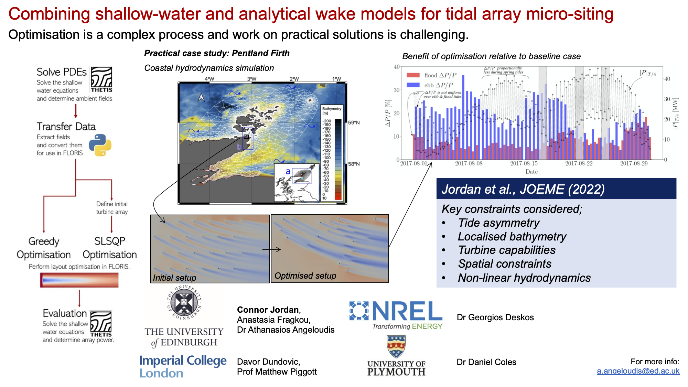

Combining shallow-water and analytical wake models for tidal array micro-siting
Our recent work, led by the recent civil engineering graduate Connor Jordan takes on the challenging problem of tidal array layout optimisaton using shallow-water equation and analytical wake models for tidal stream energy is now available within the Journal of Ocean Engineering and Marine Energy. The study considers a hierarchy of simplified, all the way to practical cases, demonstrating the versatility of our optimisation methodology.
Abstract
For tidal-stream energy to become a competitive renewable energy source, clustering multiple turbines into arrays is paramount. Array optimisation is thus critical for achieving maximum power performance and reducing cost of energy. However, ascertaining an optimal array layout is a complex problem, subject to specific site hydrodynamics and multiple inter-disciplinary constraints. In this work, we present a novel optimisation approach that combines an analytical-based wake model, FLORIS, with an ocean model, Thetis. The approach is demonstrated through applications of increasing complexity. By utilising the method of analytical wake superposition, the addition or alteration of turbine position does not require re-calculation of the entire flow field, thus allowing the use of simple heuristic techniques to perform optimisation at a fraction of the computational cost of more sophisticated methods. Using a custom condition-based placement algorithm, this methodology is applied to the Pentland Firth for arrays with turbines of 3.05m/s rated speed, demonstrating practical implications whilst considering the temporal variability of the tide. For a 24-turbine array case, micro-siting using this technique delivered an array 15.8% more productive on average than a staggered layout, despite flow speeds regularly exceeding the rated value. Performance was evaluated through assessment of the optimised layout within the ocean model that treats turbines through a discrete turbine representation. Used iteratively, this methodology could deliver improved array configurations in a manner that accounts for local hydrodynamic effects.

Figure : Graphical abstract of optimisation approach